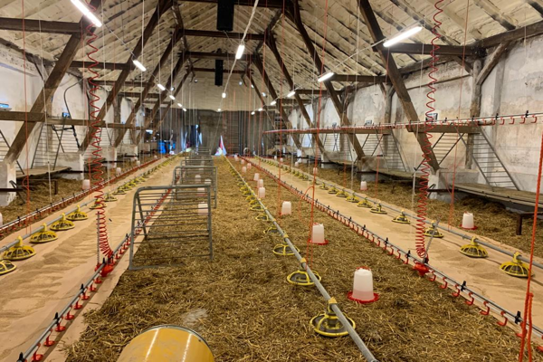
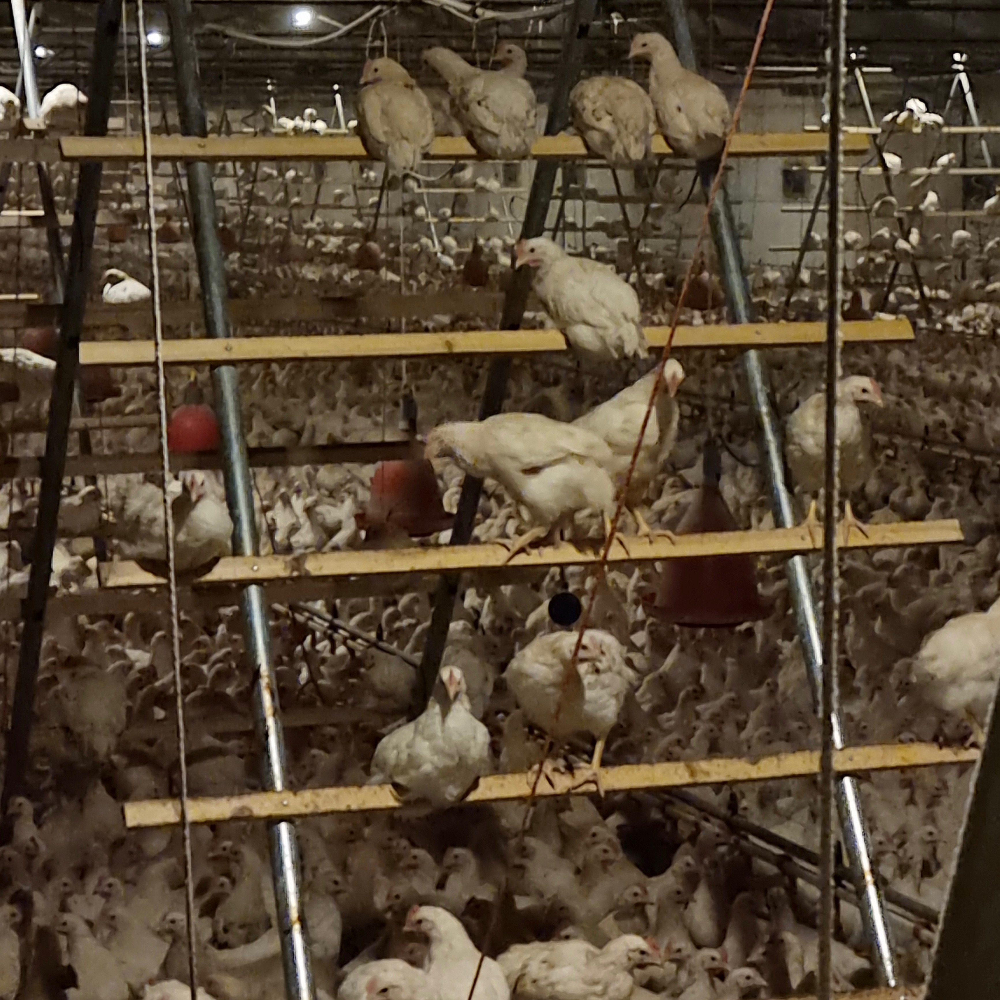

Robert Gurgul
Doradztwo żywieniowe i zootechniczne ferm drobiu
Dystrybucja Kogutów
Doradztwo żywieniowe i zootechniczne ferm drobiu
Dystrybucja Kogutów
W obecnych czasach współczesne fermy drobiu są często bardzo duże i sięgają nawet po kilkadziesiąt tysięcy sztuk ptaków. Duże skupiska zwierząt, częściej są narażone na wystąpienie zakażeń w stadzie, czy szerzenie się różnych chorób, które mogą być zakaźne. Niestety takie sytuacje, często prowadzą do ogromnych strat finansowych. Warunki, w jakich przebywają ptaki, ma znaczący wpływ na ich zdrowy rozwój i jakość produkcji. Złe warunki chowu, mogą prowadzić do rozwoju różnych chorób drobiu, przyczyną tego stanu mogą być m.in. wirusy, bakterie czy grzyby. Wspomnieć również należy, że błędy w odchowie, w technologii lęgu, czy błędy hodowlano-środowiskowe, także mają wpływ na choroby u drobiu. Źródłem zakażeń mogą być chore ptaki, które poprzez wydalanie swoich odchodów, patogenów m.in. na ściółkę, powierzchnie kurnika, a także na systemy karmienia i pojenia drobiu, przenoszą choroby.
Konieczne jest wdrażanie programu Bioasekuracji,aby przerwać, bądź zapobiec zakażeniom u drobiu. Tutaj niezwykle ważne jest dbanie o higienę, czyli mycie i dezynfekcję pomieszczeń, w jakich przechowywane jest ptactwo. Bioasekuracja, to działania, jakie należy podjąć, w celu zabezpieczenia ptactwa, przed jakimkolwiek zagrożeniem i rozprzestrzenianiem się chorób zakaźnych. Bezpieczeństwo biologiczne to działania, które mają za zadanie chronić ludzi i zwierzęta przed chorobami zakaźnymi. Źródłem rozprzestrzeniania się infekcji i wirusów, może być m.in. zła izolacja fermy, ściółka, wyposażenie, systemy pojenia i karmienia drobiu. W bioasekuracji należy wymienić 3 podstawowe części, z jakich powinna się składać: - izolacja - higiena - kontrola drobiu.
Lekarze Weterynarii, wciąż przypominają, aby przestrzegać zasad bioasekuracji. Stosując się do tych zasad, należy zapewnić odpowiednie warunki temperatury, wilgotności, powietrza oraz dostępu do światła. Należy dbać o prawidłowe rozmieszczenie ptactwa oraz zapewnić odpowiedni dostęp ptaków do systemu karmienia i pojenia drobiu. Dobrze zabezpieczyć fermę przed niepożądanymi gryzoniami i dzikimi ptakami.

Ważne, aby regularnie utrzymywać czystość, usuwać resztki paszy i odchodów tak często, jak to konieczne, aby uniknąć zakażenia. Również pracownicy fermy, powinni rygorystycznie stosować się do przepisów, jakie powinny panować na fermie drobiu. Przede wszystkim, stosować odzież ochronną, posiadać aktualne badania, a także zostać odpowiednio przeszkolonym, w zakresie higieny i innych zagrożeń. Transport drobiu, również powinien odbywać się w odpowiednio odkażonych pojazdach czy kontenerach do tego służących. Zasady bioasekuracji, należy bezwzględnie przestrzegać przez wszystkie osoby na fermach drobiu, w celu zapobiegania chorób zakaźnych. W przypadku wystąpienia ich, przestrzeganie tych zasad, jest podstawą do wypłaty za zwierzęta.